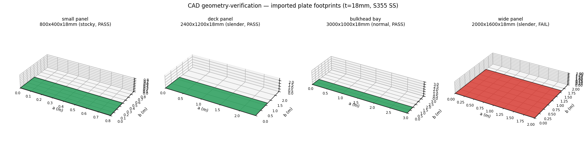

This demo packages the digitalmodel plate-buckling capability behind a
CAD-firm story: geometry → structural check → report.
A parametric set of rectangular plate panels (the midsurface geometry a CAD
package exports as STEP/IGES) is screened for elastic plate buckling. Every
capacity number is computed by the digitalmodel.infrastructure.calculations.plate_buckling
module (ElasticBucklingCalculator) — this report is the
verification / presentation layer and does not reimplement the buckling math.
The critical (elastic) buckling stress for a rectangular plate under uniaxial longitudinal compression is sigma_cr = k · pi² E / (12 (1 - nu²)) · (t/b)², where k is the boundary-condition coefficient (4.0 simply supported, 7.0 clamped), E Young's modulus, nu Poisson's ratio, t thickness and b the loaded short edge. Usage = sigma_applied / sigma_cr; a panel passes when usage ≤ 1.0.
Each panel is sanity-checked for analysis readiness without a CAD kernel: positive closed footprint, aspect ratio a/b within range, and plate slenderness beta = (b/t) sqrt(fy/E) classified stocky / normal / slender.
52/96 cases PASS, 44 FAIL — thin, slender, simply-supported panels in higher-strength steel are the buckling-critical ones.
Lightweight 3D render of the distinct plate footprints that feed the buckling check (matplotlib, headless). Green = PASS, red = FAIL.

Critical stress, applied stress, usage, slenderness class, and verdict per geometry and thickness.
| Geometry | a x b (mm) | t (mm) | Boundary | Material | sigma_cr (MPa) | sigma_applied (MPa) | Usage | Class | Verdict |
|---|---|---|---|---|---|---|---|---|---|
| small panel | 800 x 400 | 8 | simply-supported | Steel S355 | 303.7 | 213.0 | 0.701 | slender | PASS |
| small panel | 800 x 400 | 12 | simply-supported | Steel S355 | 683.3 | 213.0 | 0.312 | normal | PASS |
| small panel | 800 x 400 | 18 | simply-supported | Steel S355 | 1537.4 | 213.0 | 0.139 | stocky | PASS |
| small panel | 800 x 400 | 25 | simply-supported | Steel S355 | 2965.6 | 213.0 | 0.072 | stocky | PASS |
| deck panel | 2400 x 1200 | 8 | simply-supported | Steel S355 | 33.7 | 213.0 | 6.313 | slender | FAIL |
| deck panel | 2400 x 1200 | 12 | simply-supported | Steel S355 | 75.9 | 213.0 | 2.806 | slender | FAIL |
| deck panel | 2400 x 1200 | 18 | simply-supported | Steel S355 | 170.8 | 213.0 | 1.247 | slender | FAIL |
| deck panel | 2400 x 1200 | 25 | simply-supported | Steel S355 | 329.5 | 213.0 | 0.646 | normal | PASS |
| bulkhead bay | 3000 x 1000 | 8 | simply-supported | Steel S355 | 48.6 | 213.0 | 4.384 | slender | FAIL |
| bulkhead bay | 3000 x 1000 | 12 | simply-supported | Steel S355 | 109.3 | 213.0 | 1.948 | slender | FAIL |
| bulkhead bay | 3000 x 1000 | 18 | simply-supported | Steel S355 | 246.0 | 213.0 | 0.866 | slender | PASS |
| bulkhead bay | 3000 x 1000 | 25 | simply-supported | Steel S355 | 474.5 | 213.0 | 0.449 | normal | PASS |
| wide panel | 2000 x 1600 | 8 | simply-supported | Steel S355 | 19.0 | 213.0 | 11.222 | slender | FAIL |
| wide panel | 2000 x 1600 | 12 | simply-supported | Steel S355 | 42.7 | 213.0 | 4.988 | slender | FAIL |
| wide panel | 2000 x 1600 | 18 | simply-supported | Steel S355 | 96.1 | 213.0 | 2.217 | slender | FAIL |
| wide panel | 2000 x 1600 | 25 | simply-supported | Steel S355 | 185.4 | 213.0 | 1.149 | slender | FAIL |